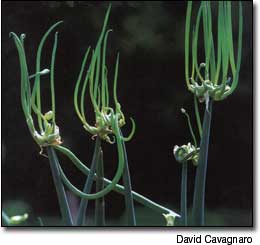
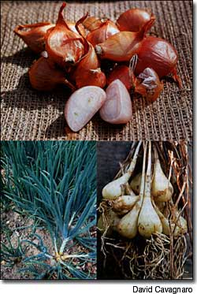
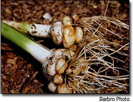
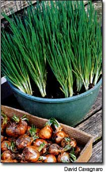
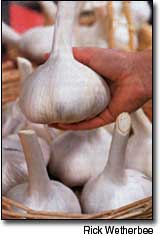

Most kitchen gardens contain at least one row of onions, usually planted in the spring. Less well-known are the fall-planted onions, including multiplying onions, shallots and bulbing leeks
They offer several advantages over their spring counterparts. Fall-planted onions need to go in the ground when few other garden chores demand to be done. They also tend to be more reliable and productive, less day-length sensitive and less subject to the depravations of pests and diseases than the more-familiar onions of spring.
Other than garlic, these autumn onions mostly fall into the Allium cepa var. aggregatum group, although notable exceptions include bulbing leeks ( A. ampeloprasum ) and the perennial Rakkyo ( A. Chinese ). By and large, all multiply primarily through the formation of new bulbs, which is called vegetative propagation. Most alliums do not produce seed.
Identifying autumn onions can be confusing because the same common name often is used to describe different plants. For instance, potato onions sometimes are called Egyptian onions, which actually are in the top-setting Proliferum group.
To help clear the fog, here's a rundown of various popular types:
Also known as Egyptian onions, tree onions, top onions and walking onions, these perennials set small bulblets on top of tall stems, instead of producing underground bulbs or making seed heads. The bulblets measure only 1/2 to 1 inch in length and look like miniature purple-red onions. They often are used for pickling and in vinaigrettes or soups, and they will last several months in storage.
The weight of the bulblet cluster, if left alone, causes the stem to bend, dropping the cluster to the ground, where it roots and sends up new shoots - thus the "walking" sobriquet. To propagate them, simply remove some of the bulblets and plant them where you want new onions to grow.
The `Catawissa' onion is a variant of the Egyptian onion. Its bulblets actually can send out shoots before touching the ground, so that a second and sometimes even a third tier of bulblets are produced.
Bulbing Multiplying Onions. Most commonly known as potato onions, these multipliers also are called ground onions, inground onions and hill onions. Some carry descriptive or varietal names as well, such as `Yellow,' `Red,' `Kentucky Hill' and `Greeley's.'
To propagate, plant the bulbs in the fall. At maturity the next summer, a single bulb divides into as many as 14 new bulbs. Depending on the variety, the new bulbs can be full-sized singles (as much as 3 inches in diameter), a bunch of small bulbs, or a combination of large and small bulbs.
As a general rule, the large onions are kept for the table and the small ones are used as sets for planting out again.
Shallots. Botanically speaking, shallots don't exist; they are a form of bulbing multiplying onion, differentiated by their smaller size. Originally, they were named for a plant found by the Crusaders, but they bear no botanical relationship to that plant. Most shallots on the market today are not even the same shallot so beloved by the French. Instead, they are varieties developed by crossing common onions with Welsh onions or other multipliers - a primary aim of the plant breeders was to create varieties that could be reliably reproduced.
Some authorities differentiate shallots from other multipliers by the color of their skins. The Ontario Ministry of Agriculture and Food, for example, identifies shallots as those with red skins (or scales) and true multipliers as those with yellow or brown skins. Most shallots do not flower or produce seed, although breeders have developed some new varieties that can be grown from seed.
In practical terms, shallots are small, layered multipliers with a special taste that falls somewhere between onion and garlic. They are propagated in the ground the same as other bulbing multipliers, and each bulb produces from four to a dozen baby bulbs in a bunch, joined at the base by a membrane. In most varieties, each bulb is split into two large cloves that may or may not share a common wrapper.
Bulbing Leeks. Leeks usually are spring-planted from seed, but several types that are neither precisely bulb nor multiplier do bridge the botanical gap between seed-forming leeks and non-seed-forming garlics. Three are of particular interest to home gardeners.
The most familiar is elephant garlic, which forms huge heads differentiated into cloves, each of which can grow to the size of a big man's thumb. Occasionally, small, hard bulbets form outside the main head as well. Elephant garlic is propagated exactly like true garlic, by dividing and replanting the cloves.
Perlzwiebel, also known as Portuguese onion, is another bulbing leek. The head divides into small, round bulblets resembling pearl onions that range from pearl size to an inch in length, with the larger ones tending to be flattened.
The third is the Los Mol wild leek, perhaps the least known of the three. Naturalized throughout Europe (primarily in Spain and the United Kingdom), each bulb divides into four bulbs that sometimes have hard bulblets attached, like elephant garlic. Either the full bulb or the bulblets can be used for propagation.
Los Mol tastes like garlic, and those who know it say they like it best in omelettes and soups. This leek is not a truly wild plant; rather it once was widely cultivated, particularly in church gardens. Some of the naturalized European stands now are being rediscovered and harvested for commercial purposes because interest among gardeners is on the rise.
Except in the far north, standard leeks can be grown as a fall/winter crop, too, particularly if they are well mulched. To succeed, you should set seeds indoors in July or August, to protect the plants from extreme summer heat, and transplant them to the garden in September, when temperatures begin to fall. Before cold-weather threatens, make sure the plants are well mulched.
Rakkyo. This allium is very familiar to most gardeners, but they don't know it. If you've ever bought a jar of those tiny pickled onions, which you probably thought were pearl onions, chances are you bought Rakkyos. The Japanese pickle and export thousands of barrels of Rakkyo each year.
It is a multiplying perennial with a backwards-growing twist. Planted in late summer, Rakkyo grows new leaves and scapes, which are leafless stalks, at the same time.
In October, the scapes put out flower heads that do not produce seed. The plant then goes through the same winter dormancy as other autumn onions, producing bulbs in the late spring and early summer. Each bulb divides into from four to 14 new full-sized bulbs, each measuring roughly 1-by 1/2 inch.
By July, tile bulbing is complete; if not harvested (called "lifting" with bull) crops) then, the plants go through a short summer dormancy. By August, they start their growing cycle again.
Heirloom onion grower David Cavagnaro says a few small bulblets from walking onions or other autumn alliums easily can be potted up and kept on a windowsill for a steady supply of tender green onion tops in winter, Most of the multipliers grow better indoors than chives during the cold months of the year.
To make peeling small onions and shallots easier, some restaurant chefs cut off one tip, drop the bulb into hot oil briefly, drain and cool it, and squeeze out the softened insides. Baking the bulbs like garlic, says Cavagnaro, probably would work well, too.
Fall-planted onions can go into the ground at tulip-planting time (and easy way to remember when to plant them) and, in most cases, the onions should be cultivated just like garlic. Although they will grow in any soil, they prefer , a rich, light loam that allows them to "stretch their legs," or spread.
Onions also are heavy feeders, so the soil should be amended (enriched) regularly. For a new planting, equal parts of dried blood, bone meal and hardwood ashes should be worked into the soil at the rate of one cup to every 10-foot row before planting takes place.
Established plantings should be fertilized with the same soil amendments and/or compost by side-dressing the plants, which means spreading the materials around their bases.
Planting can take place anytime the soil can be worked, as long as the plants' root structures have time to develop be fore the ground freezes. In most of the United States, October to December is prime fall-onion-planting time.
During warmer-than-normal winters, some sprouting may take place before the plants go completely dormant; in such a case, the tender sprout leaves may suffer frostbite over the winter but the plants themselves will not be harmed.
All fall onions but shallots should be planted from 2 to 4 inches deep and from 4 to 6 inches apart. Space the rows at least 8 inches apart, so you have room to hoe. In far northern areas, it's OK to mulch them in winter.
Shallots should be planted less deeply than the others - with their tops just under or level with the soil line, like spring-planted onion sets. This way, the shallots will grow on top of the soil, like common onions. In colder areas, shallots absolutely require mulching.
The tops of fall-planted onions will start to dry up and die back in mid-summer. When about half the leaves have died, the bulbs should be harvested. If the weather is fair, they can cure right on top of the soil. In wet weather, spread them out in a sheltered area that is warm but not subject to direct sunlight. In either case, after a few days, hang them in bunches to finish drying.
4 chicken breasts, skinned, deboned
1/2 cup Rakkyo onions (or shallots)
3 garlic cloves, minced
1 cup rnayonnaise
Juice of 2 limes
1/4 teaspoon cayenne
Salt and pepper to taste
Paprika
Trim and peel the Rakkyo, and cut each bulb in half lengthwise. Combine the mayonnaise, onions, garlic, cayenne and lime juice. Slice the chicken breasts into strips about 1/2-inch thick, cutting across the grain. Lightly saute the strips, turning once, until they just turn opaque.
Combine the sauteed chicken with the mayonnaise mixture and refrigerate at least two hours. Transfer the ingredients to a baking dish, sprinkle with the paprika and bake at 350 degrees about 20 minutes.
2 teaspoons olive oil
Generous pinch cayenne
2 /3 cup shallots, minced
3 garlic cloves, minced
2 cups semisweet white wine
24 mussels, cleaned and debearded
l tablespoon fresh rosemary, chopped
Heat the oil in a heavy skillet. Add the cayenne and wait 30 seconds. Add the shallots and garlic; saute three to four minutes, stirring occasionally. Add the wine and bring to a simmer. Add the mussels. Cover and steam until the shells open, five to six minutes. Discard any mussels that do not open. Divide evenly between four shallow dishes, and sprinkle with rosemary.
Remove loose skins, slice off the top of each head (pointy end), arrange in a baking dish and drizzle with oil.
Cover with foil and bake 45 minutes at 350 degrees; remove cover and bake another 15 minutes, until garlic is soft and golden. Cool. To serve, squeeze soft garlic out of skins and spread on meat or bread.
1 cup fine cracker crumbs
1/2 stick plus 2 tablespoons butter
2 claps multiplying onions, thinly sliced
2 eggs, lightly beaters
3/4 cup milk
3/4 teaspoon salt
Dash pepper
1/4 cup sharp cheddar cheese, shredded
Paprika
Melt 1/2-stick of butter; stir in cracker crumbs and press the mixture into an 8-inch pie plate. In a skillet, saute the onion slices in 2 tablespoons of butter until they are transparent. Spoon them into the prepared pie plate. Combine the eggs, milk, salt and pepper; pour mixture over the onions. Sprinkle with shredded cheese and paprika, and bake at 350 degrees for about 30 minutes.
Shallots are becoming easier to find on the commercial market, but multiplying onions and bulbing leeks still are rare. Only a few seed houses carry them, so you will be more likely to find them through seed-saving organizations, such as Seed Savers Exchange, or through private growers. Among commercial sources, Horus Botanicals may be the only company with a full range of shallots, multiplying onions and bulbing leeks.
Key: B=Bulbing Leeks; P=Potato Onions; S=Shallots; and T=Topsetting Onions.
Halifax Seed (S) PO. Box 8026 Station A Halifax, NS B3K 5L8 Canada (902) 454-7456 www.halifaxseed.com
Horus Botanicals (B, P, S, T) 341 Mulberry Salem, AR 72576
Seed Savers Exchange (B. P, S, T) 3076 North Winn Road Decorah, IA 52101 (563) 382-5990 www.seedsavers.org (Only available to members)
Southern Exposure Seed Exchange (B, P, S) PO. Box 460 Mineral, VA 23117 (540) 894-9480 www.southernexposure.com
Territorial Seed (P, S, T) PO. Box 158 Cottage Grove, OR 97424 (541) 9429547 www.territorialseed.com
Mother Earth News
|
 Egyptian or walking onions produce bulblets at the tops of tall stems each spring |
 Clockwise From Top: Shallots, a form o multiplying onion, are favored by chefs for their distinctive flavor, described as a blend of onion and garlic; a harvest of Japanese multiplier 'Swensen's Small'; 'Yellow' potato onions grow in a distinctive pattern. |
 Perlzwiebel, also called Portuguese onion, is a kind of bulbing leek. |
|
 Onion Tips |
 Elephant Garlic |
|